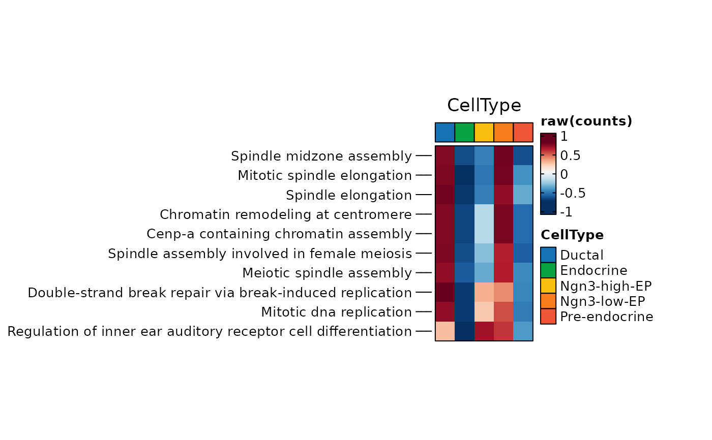
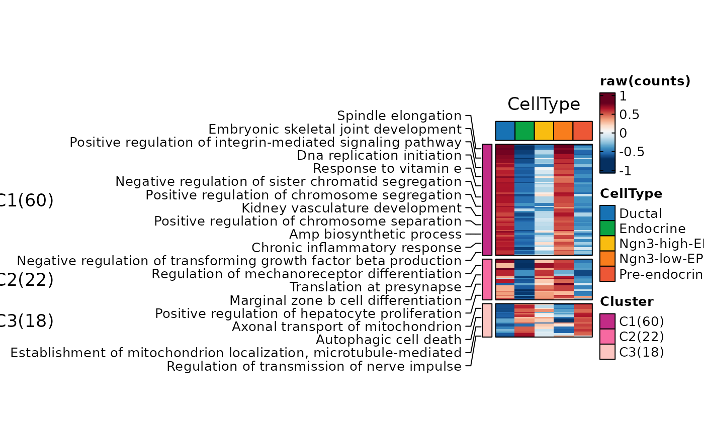
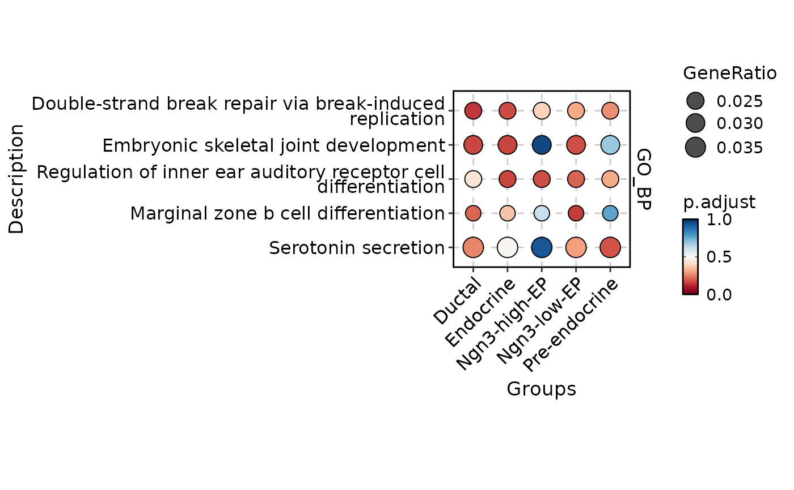
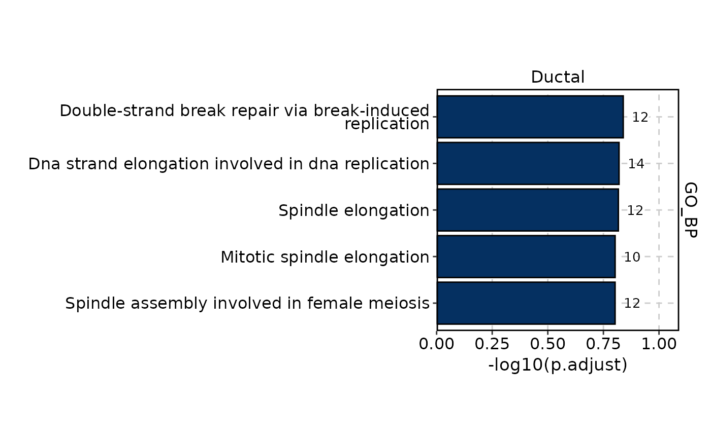
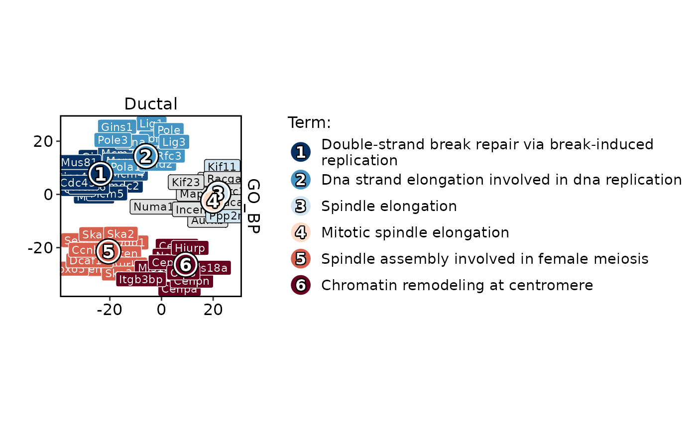
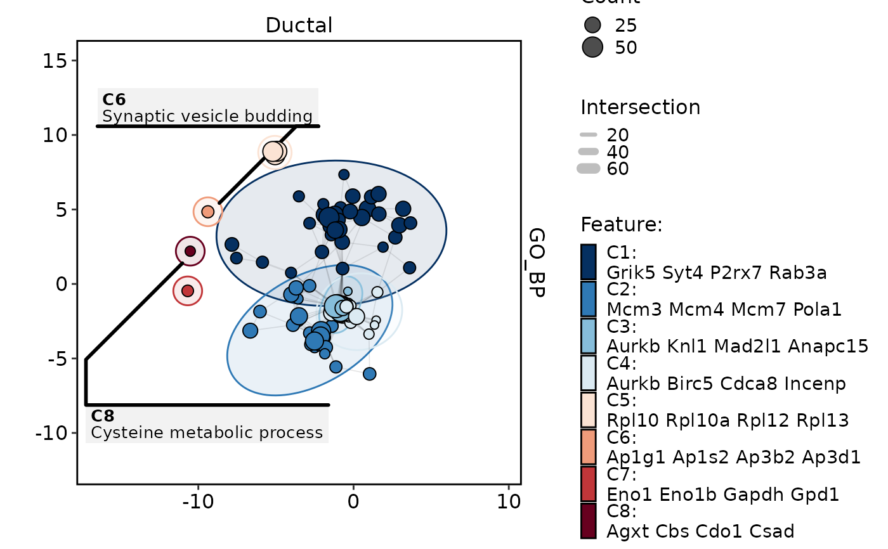
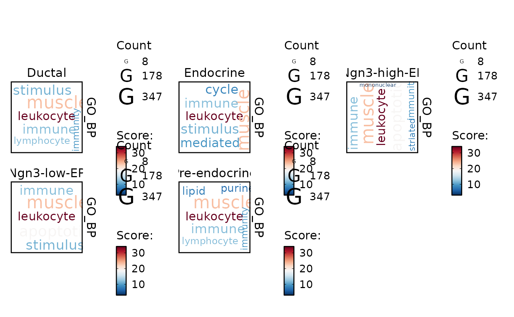
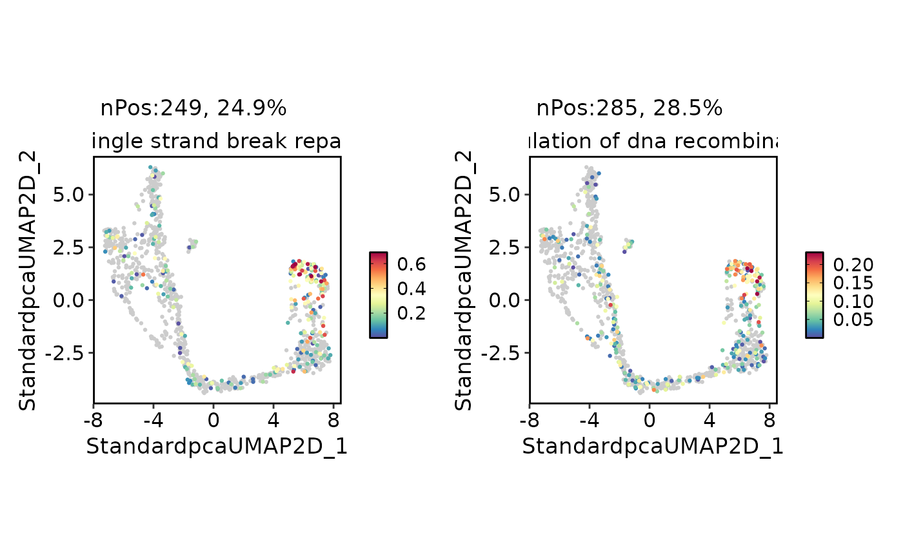
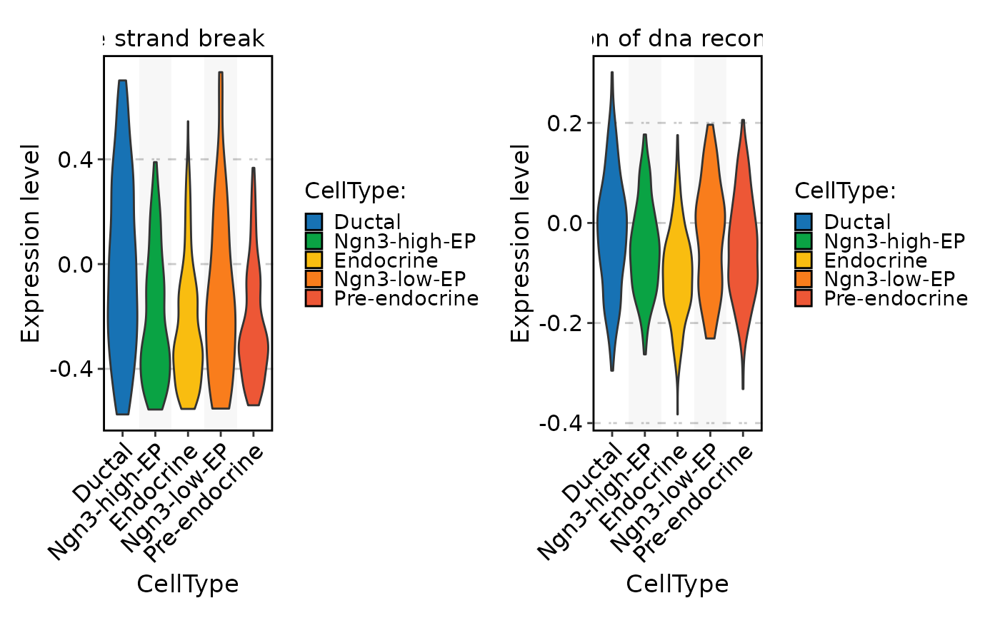

Plots for GSVA (Gene Set Variation Analysis)
Usage
GSVAPlot(
srt = NULL,
res = NULL,
group.by = NULL,
assay_name = "GSVA",
db = NULL,
plot_type = c("heatmap", "bar", "network", "enrichmap", "wordcloud", "comparison"),
split_by = c("Database", "Groups"),
color_by = "Database",
group_use = NULL,
features = NULL,
topTerm = NULL,
score_cutoff = NULL,
pvalueCutoff = NULL,
padjustCutoff = NULL,
topWord = 100,
word_type = c("term", "feature"),
word_size = c(2, 8),
network_layout = "fr",
network_labelsize = 5,
network_blendmode = "blend",
network_layoutadjust = TRUE,
network_adjscale = 60,
network_adjiter = 100,
enrichmap_layout = "fr",
enrichmap_cluster = "fast_greedy",
enrichmap_label = c("term", "feature"),
enrichmap_labelsize = 5,
enrlichmap_nlabel = 4,
enrichmap_show_keyword = FALSE,
enrichmap_mark = c("ellipse", "hull"),
enrichmap_expand = c(0.5, 0.5),
words_excluded = NULL,
lineheight = 0.7,
feature_split = NULL,
n_split = NULL,
split_order = NULL,
split_method = c("kmeans", "hclust", "mfuzz"),
decreasing = FALSE,
fuzzification = NULL,
cluster_rows = FALSE,
cluster_columns = FALSE,
cluster_row_slices = FALSE,
show_row_names = FALSE,
show_column_names = FALSE,
row_names_side = "right",
column_names_side = "bottom",
row_names_rot = 0,
column_names_rot = 90,
character_width = 50,
palette = "simspec",
palcolor = NULL,
group_palette = "Chinese",
group_palcolor = NULL,
heatmap_palette = "RdBu",
heatmap_palcolor = NULL,
limits = NULL,
height = NULL,
width = NULL,
units = "inch",
use_raster = NULL,
raster_device = "png",
raster_by_magick = FALSE,
ht_params = list(),
aspect.ratio = 1,
legend.position = "right",
legend.direction = "vertical",
theme_use = "theme_scop",
theme_args = list(),
combine = TRUE,
nrow = NULL,
ncol = NULL,
byrow = TRUE,
border = TRUE,
seed = 11
)Arguments
- srt
A Seurat object containing the results of RunGSVA. If specified, GSVA results will be extracted from the
Seuratobject automatically. If not specified, theresargument must be provided.- res
GSVA results generated by RunGSVA function. If provided, 'srt' and 'group.by' are ignored.
- group.by
A character vector specifying the grouping variable used in RunGSVA.
- assay_name
The name of the assay or tools slot containing GSVA results. Default is
"GSVA".- db
The database name used in RunGSVA. Only used for compatibility with EnrichmentPlot. Default is
NULL(will be inferred from GSVA results or set to "GSVA").- plot_type
The type of plot to generate. Options are:
"heatmap","bar","network","enrichmap","wordcloud","comparison". Default is"heatmap". Note:"heatmap"uses ComplexHeatmap directly, while other types reuse EnrichmentPlot logic.- split_by
The splitting variable(s) for the plot. Can be
"Database","Groups", or both. Default is"Database".- color_by
The variable used for coloring. Default is
"Database".- group_use
The group(s) to be used for GSVA plot. Default is
NULL(all groups).- features
A character vector of features to use. Default is
NULL.- topTerm
A number of top terms to include. Default is
5.- score_cutoff
The score cutoff for the GSVA plot. Default is
NULL(no cutoff).- pvalueCutoff
A numeric vector specifying the p-value cutoff(s) for significance. Default is
NULL.- padjustCutoff
The adjusted p-value cutoff for significance. Default is
0.05.- topWord
A number of top words to include. Default is
20.- word_type
The type of words to display in wordcloud. Options are
"term"and"feature". Default is"term".- word_size
The size range for words in wordcloud. Default is
c(2, 8).- network_layout
The layout algorithm to use for network plot. Options are
"fr","kk","random","circle","tree","grid", or other algorithm fromigraphpackage. Default is"fr".- network_labelsize
The label size for network plot. Default is
5.- network_blendmode
The blend mode for network plot. Default is
"blend".- network_layoutadjust
Whether to adjust the layout of the network plot to avoid overlapping words. Default is
TRUE.- network_adjscale
The scale for adjusting network plot layout. Default is
60.- network_adjiter
The number of iterations for adjusting network plot layout. Default is
100.- enrichmap_layout
The layout algorithm to use for enrichmap plot. Options are
"fr","kk","random","circle","tree","grid", or other algorithm fromigraphpackage. Default is"fr".- enrichmap_cluster
The clustering algorithm to use for enrichmap plot. Options are
"walktrap","fast_greedy", or other algorithm fromigraphpackage. Default is"fast_greedy".- enrichmap_label
The label type for enrichmap plot. Options are
"term"and"feature". Default is"term".- enrichmap_labelsize
The label size for enrichmap plot. Default is
5.- enrlichmap_nlabel
The number of labels to display for each cluster in enrichmap plot. Default is
4.- enrichmap_show_keyword
Whether to show the keyword of terms or features in enrichmap plot. Default is
FALSE.- enrichmap_mark
The mark shape for enrichmap plot. Options are
"ellipse"and"hull". Default is"ellipse".- enrichmap_expand
The expansion factor for enrichmap plot. Default is
c(0.5, 0.5).- words_excluded
A character vector specifying the words to exclude. Default is
NULL.- lineheight
The line height for y-axis labels. Default is
0.7.- feature_split
A factor specifying how to split the features. Default is
NULL.- n_split
A number of feature splits (feature clusters) to create. Default is
NULL.- split_order
A numeric vector specifying the order of splits. Default is
NULL.- split_method
A character vector specifying the method for splitting features. Options are
"kmeans","hclust", or"mfuzz". Default is"kmeans".- decreasing
Whether to sort feature splits in decreasing order. Default is
FALSE.- fuzzification
The fuzzification coefficient. Default is
NULL.- cluster_rows
Whether to cluster rows in the heatmap. Default is
FALSE.- cluster_columns
Whether to cluster columns in the heatmap. Default is
FALSE.- cluster_row_slices
Whether to cluster row slices in the heatmap. Default is
FALSE.- show_row_names
Whether to show row names in the heatmap. Default is
FALSE.- show_column_names
Whether to show column names in the heatmap. Default is
FALSE.- row_names_side
A character vector specifying the side to place row names.
- column_names_side
A character vector specifying the side to place column names.
- row_names_rot
The rotation angle for row names. Default is
0.- column_names_rot
The rotation angle for column names. Default is
90.- character_width
The maximum width of character of descriptions. Default is
50.- palette
Color palette name. Available palettes can be found in thisplot::show_palettes. Default is
"Chinese".- palcolor
Custom colors used to create a color palette. Default is
NULL.- group_palette
A character vector specifying the palette to use for groups. Default is
"Chinese".- group_palcolor
A character vector specifying the group color to use. Default is
NULL.- heatmap_palette
A character vector specifying the palette to use for the heatmap. Default is
"RdBu".- heatmap_palcolor
A character vector specifying the heatmap color to use. Default is
NULL.- limits
A two-length numeric vector specifying the limits for the color scale. Default is
NULL.- height
The height of the heatmap in the specified units. If not provided, the height will be automatically determined based on the number of rows in the heatmap and the default unit.
- width
The width of the heatmap in the specified units. If not provided, the width will be automatically determined based on the number of columns in the heatmap and the default unit.
- units
The units to use for the width and height of the heatmap. Default is
"inch", Options are"mm","cm", or"inch".- use_raster
Whether to use a raster device for plotting. Default is
NULL.- raster_device
A character vector specifying the raster device to use. Default is
"png".- raster_by_magick
Whether to use the 'magick' package for raster. Default is
FALSE.- ht_params
Additional parameters to customize the appearance of the heatmap. This should be a list with named elements, where the names correspond to parameter names in the ComplexHeatmap::Heatmap function. Any conflicting parameters will override the defaults set by this function. Default is
list().- aspect.ratio
Aspect ratio of the panel. Default is
1.- legend.position
The position of legends, one of
"none","left","right","bottom","top". Default is"right".- legend.direction
The direction of the legend in the plot. Can be one of
"vertical"or"horizontal".- theme_use
Theme used. Can be a character string or a theme function. Default is
"theme_scop".- theme_args
Other arguments passed to the
theme_use. Default islist().- combine
Combine plots into a single
patchworkobject. IfFALSE, return a list of ggplot objects.- nrow
Number of rows in the combined plot. Default is
NULL, which means determined automatically based on the number of plots.- ncol
Number of columns in the combined plot. Default is
NULL, which means determined automatically based on the number of plots.- byrow
Whether to arrange the plots by row in the combined plot. Default is
TRUE.- border
Whether to add a border to the heatmap. Default is
TRUE.- seed
Random seed for reproducibility. Default is
11.
Examples
data(pancreas_sub)
pancreas_sub <- standard_scop(pancreas_sub)
#> ℹ [2026-03-20 08:39:04] Start standard scop workflow...
#> ℹ [2026-03-20 08:39:04] Checking a list of <Seurat>...
#> ! [2026-03-20 08:39:04] Data 1/1 of the `srt_list` is "unknown"
#> ℹ [2026-03-20 08:39:04] Perform `NormalizeData()` with `normalization.method = 'LogNormalize'` on 1/1 of `srt_list`...
#> ℹ [2026-03-20 08:39:06] Perform `Seurat::FindVariableFeatures()` on 1/1 of `srt_list`...
#> ℹ [2026-03-20 08:39:07] Use the separate HVF from `srt_list`
#> ℹ [2026-03-20 08:39:07] Number of available HVF: 2000
#> ℹ [2026-03-20 08:39:07] Finished check
#> ℹ [2026-03-20 08:39:07] Perform `Seurat::ScaleData()`
#> ℹ [2026-03-20 08:39:07] Perform pca linear dimension reduction
#> ℹ [2026-03-20 08:39:08] Perform `Seurat::FindClusters()` with `cluster_algorithm = 'louvain'` and `cluster_resolution = 0.6`
#> ℹ [2026-03-20 08:39:08] Reorder clusters...
#> ℹ [2026-03-20 08:39:09] Perform umap nonlinear dimension reduction
#> ℹ [2026-03-20 08:39:09] Perform umap nonlinear dimension reduction using Standardpca (1:50)
#> ℹ [2026-03-20 08:39:12] Perform umap nonlinear dimension reduction using Standardpca (1:50)
#> ✔ [2026-03-20 08:39:15] Run scop standard workflow completed
pancreas_sub <- RunGSVA(
pancreas_sub,
db = "GO_BP",
group.by = "CellType",
species = "Mus_musculus",
method = "gsva",
kcdf = "Gaussian"
)
#> ℹ [2026-03-20 08:39:15] Start GSVA analysis
#> ℹ [2026-03-20 08:41:31] Averaging expression by "CellType" ...
#> ℹ [2026-03-20 08:41:31] Aggregated expression matrix: 15998 genes x 5 groups
#> ℹ [2026-03-20 08:41:31] Species: "Mus_musculus"
#> ℹ [2026-03-20 08:41:31] Loading cached: GO_BP version: 3.22.0 nterm:15169 created: 2026-03-20 08:29:24
#> ℹ [2026-03-20 08:41:32] Processing database: "GO_BP" ...
#> ℹ [2026-03-20 08:41:33] Initial overlap: 11182 genes out of 15998 expression genes and 16088 genes in gene sets
#> ℹ [2026-03-20 08:41:36] Running GSVA for 5668 gene sets ...
#> ℹ GSVA version 2.4.8
#> ℹ Searching for rows with constant values
#> ! 2 rows with constant values throughout the columns
#> ! Rows with constant values are discarded
#> ℹ Calculating GSVA ranks
#> ℹ GSVA dense (classical) algorithm
#> ℹ Row-wise ECDF estimation with Gaussian kernels
#> ℹ Calculating row ECDFs
#> ℹ Calculating column ranks
#> ℹ GSVA dense (classical) algorithm
#> ℹ Calculating GSVA scores
#> ✔ Calculations finished
#> ℹ [2026-03-20 08:43:04] GSVA results stored in `tools` slot: "GSVA_CellType_gsva"
#> ✔ [2026-03-20 08:43:04] GSVA analysis done
ht1 <- GSVAPlot(
pancreas_sub,
plot_type = "heatmap",
group.by = "CellType",
topTerm = 10,
width = 1,
height = 2
)
#> Warning: Data is of class matrix. Coercing to dgCMatrix.

ht2 <- GSVAPlot(
pancreas_sub,
group.by = "CellType",
plot_type = "heatmap",
n_split = 3,
topTerm = 100,
use_raster = TRUE,
width = 1,
height = 2
)
#> Warning: Data is of class matrix. Coercing to dgCMatrix.

GSVAPlot(
srt = pancreas_sub,
group.by = "CellType",
db = "GO_BP",
plot_type = "comparison",
topTerm = 1
)

GSVAPlot(
srt = pancreas_sub,
group.by = "CellType",
db = "GO_BP",
group_use = "Ductal",
plot_type = "bar",
topTerm = 5
)

GSVAPlot(
srt = pancreas_sub,
group.by = "CellType",
group_use = "Ductal",
db = "GO_BP",
plot_type = "network"
)
#> Found more than one class "dist" in cache; using the first, from namespace 'spam'
#> Also defined by ‘BiocGenerics’
#> Found more than one class "dist" in cache; using the first, from namespace 'spam'
#> Also defined by ‘BiocGenerics’
#> ◌ [2026-03-20 08:43:11] Installing: shadowtext...
#>
#> → Will install 2 packages.
#> → All 2 packages (0 B) are cached.
#> + prettydoc 0.4.1 + ✔ pandoc
#> + shadowtext 0.1.6
#> ✔ All system requirements are already installed.
#>
#> ℹ No downloads are needed, 2 pkgs are cached
#> ✔ Got shadowtext 0.1.6 (x86_64-pc-linux-gnu-ubuntu-24.04) (237.73 kB)
#> ✔ Got prettydoc 0.4.1 (x86_64-pc-linux-gnu-ubuntu-24.04) (996.43 kB)
#> ℹ Installing system requirements
#> ℹ Executing `sudo sh -c apt-get -y update`
#> Get:1 file:/etc/apt/apt-mirrors.txt Mirrorlist [144 B]
#> Hit:2 http://azure.archive.ubuntu.com/ubuntu noble InRelease
#> Hit:6 https://packages.microsoft.com/repos/azure-cli noble InRelease
#> Hit:7 https://packages.microsoft.com/ubuntu/24.04/prod noble InRelease
#> Hit:3 http://azure.archive.ubuntu.com/ubuntu noble-updates InRelease
#> Hit:4 http://azure.archive.ubuntu.com/ubuntu noble-backports InRelease
#> Hit:5 http://azure.archive.ubuntu.com/ubuntu noble-security InRelease
#> Reading package lists...
#> ℹ Executing `sudo sh -c apt-get -y install pandoc make libcairo2-dev libfontconfig1-dev libfreetype6-dev libpng-dev`
#> Reading package lists...
#> Building dependency tree...
#> Reading state information...
#> pandoc is already the newest version (3.1.3+ds-2).
#> make is already the newest version (4.3-4.1build2).
#> libcairo2-dev is already the newest version (1.18.0-3build1).
#> libfontconfig1-dev is already the newest version (2.15.0-1.1ubuntu2).
#> libfreetype-dev is already the newest version (2.13.2+dfsg-1ubuntu0.1).
#> libpng-dev is already the newest version (1.6.43-5ubuntu0.5).
#> 0 upgraded, 0 newly installed, 0 to remove and 83 not upgraded.
#> ✔ Installed prettydoc 0.4.1 (1s)
#> ✔ Installed shadowtext 0.1.6 (1s)
#> ✔ 1 pkg + 56 deps: kept 55, added 2, dld 2 (1.23 MB) [5.3s]
#> ✔ [2026-03-20 08:43:17] shadowtext installed successfully

GSVAPlot(
srt = pancreas_sub,
group.by = "CellType",
group_use = "Ductal",
db = "GO_BP",
plot_type = "enrichmap"
)

GSVAPlot(
pancreas_sub,
group.by = "CellType",
db = "GO_BP",
nrow = 2,
plot_type = "wordcloud",
topWord = 50
)
#> Warning: Some words could not fit on page. They have been removed.
#> Warning: Some words could not fit on page. They have been removed.
#> Warning: Some words could not fit on page. They have been removed.
#> Warning: Some words could not fit on page. They have been removed.
#> Warning: Some words could not fit on page. They have been removed.

GSVAPlot(
pancreas_sub,
group.by = "CellType",
group_use = "Ductal",
db = "GO_BP",
plot_type = "wordcloud",
word_type = "feature"
)
 pancreas_sub <- RunGSVA(
pancreas_sub,
assay_name = "GSVA",
db = "GO_BP",
species = "Mus_musculus"
)
#> ℹ [2026-03-20 08:44:18] Start GSVA analysis
#> ℹ [2026-03-20 08:44:18] Single-cell GSVA mode: using expression matrix directly ...
#> ℹ [2026-03-20 08:44:18] Expression matrix: 15998 genes x 1000 cells
#> ℹ [2026-03-20 08:44:18] Species: "Mus_musculus"
#> ℹ [2026-03-20 08:44:18] Loading cached: GO_BP version: 3.22.0 nterm:15169 created: 2026-03-20 08:29:24
#> ℹ [2026-03-20 08:44:19] Processing database: "GO_BP" ...
#> ℹ [2026-03-20 08:44:20] Initial overlap: 11182 genes out of 15998 expression genes and 16088 genes in gene sets
#> ℹ [2026-03-20 08:44:23] Running GSVA for 5668 gene sets ...
#> ℹ GSVA version 2.4.8
#> ℹ Searching for rows with constant values
#> ℹ Calculating GSVA ranks
#> ℹ GSVA dense (classical) algorithm
#> ℹ Row-wise ECDF estimation with Gaussian kernels
#> ℹ Calculating row ECDFs
#> Estimating ECDFs ■■ 3% | ETA: 37s
#> Estimating ECDFs ■■ 4% | ETA: 1m
#> Estimating ECDFs ■■ 4% | ETA: 1m
#> Estimating ECDFs ■■■ 5% | ETA: 1m
#> Estimating ECDFs ■■■ 6% | ETA: 1m
#> Estimating ECDFs ■■■ 7% | ETA: 1m
#> Estimating ECDFs ■■■ 8% | ETA: 48s
#> Estimating ECDFs ■■■■ 9% | ETA: 46s
#> Estimating ECDFs ■■■■ 10% | ETA: 45s
#> Estimating ECDFs ■■■■ 11% | ETA: 44s
#> Estimating ECDFs ■■■■ 12% | ETA: 43s
#> Estimating ECDFs ■■■■■ 13% | ETA: 42s
#> Estimating ECDFs ■■■■■ 13% | ETA: 41s
#> Estimating ECDFs ■■■■■ 14% | ETA: 40s
#> Estimating ECDFs ■■■■■■ 15% | ETA: 39s
#> Estimating ECDFs ■■■■■■ 16% | ETA: 38s
#> Estimating ECDFs ■■■■■■ 17% | ETA: 37s
#> Estimating ECDFs ■■■■■■ 18% | ETA: 37s
#> Estimating ECDFs ■■■■■■■ 19% | ETA: 36s
#> Estimating ECDFs ■■■■■■■ 20% | ETA: 36s
#> Estimating ECDFs ■■■■■■■ 21% | ETA: 35s
#> Estimating ECDFs ■■■■■■■ 21% | ETA: 34s
#> Estimating ECDFs ■■■■■■■■ 22% | ETA: 34s
#> Estimating ECDFs ■■■■■■■■ 23% | ETA: 33s
#> Estimating ECDFs ■■■■■■■■ 24% | ETA: 33s
#> Estimating ECDFs ■■■■■■■■■ 25% | ETA: 32s
#> Estimating ECDFs ■■■■■■■■■ 26% | ETA: 32s
#> Estimating ECDFs ■■■■■■■■■ 27% | ETA: 31s
#> Estimating ECDFs ■■■■■■■■■ 28% | ETA: 31s
#> Estimating ECDFs ■■■■■■■■■■ 29% | ETA: 30s
#> Estimating ECDFs ■■■■■■■■■■ 30% | ETA: 30s
#> Estimating ECDFs ■■■■■■■■■■ 30% | ETA: 29s
#> Estimating ECDFs ■■■■■■■■■■ 31% | ETA: 29s
#> Estimating ECDFs ■■■■■■■■■■■ 32% | ETA: 28s
#> Estimating ECDFs ■■■■■■■■■■■ 33% | ETA: 28s
#> Estimating ECDFs ■■■■■■■■■■■ 34% | ETA: 28s
#> Estimating ECDFs ■■■■■■■■■■■ 35% | ETA: 27s
#> Estimating ECDFs ■■■■■■■■■■■■ 36% | ETA: 27s
#> Estimating ECDFs ■■■■■■■■■■■■ 37% | ETA: 26s
#> Estimating ECDFs ■■■■■■■■■■■■ 38% | ETA: 26s
#> Estimating ECDFs ■■■■■■■■■■■■■ 38% | ETA: 26s
#> Estimating ECDFs ■■■■■■■■■■■■■ 39% | ETA: 25s
#> Estimating ECDFs ■■■■■■■■■■■■■ 40% | ETA: 25s
#> Estimating ECDFs ■■■■■■■■■■■■■ 41% | ETA: 24s
#> Estimating ECDFs ■■■■■■■■■■■■■■ 42% | ETA: 24s
#> Estimating ECDFs ■■■■■■■■■■■■■■ 43% | ETA: 23s
#> Estimating ECDFs ■■■■■■■■■■■■■■ 44% | ETA: 23s
#> Estimating ECDFs ■■■■■■■■■■■■■■ 45% | ETA: 23s
#> Estimating ECDFs ■■■■■■■■■■■■■■■ 46% | ETA: 22s
#> Estimating ECDFs ■■■■■■■■■■■■■■■ 47% | ETA: 22s
#> Estimating ECDFs ■■■■■■■■■■■■■■■ 47% | ETA: 22s
#> Estimating ECDFs ■■■■■■■■■■■■■■■ 48% | ETA: 21s
#> Estimating ECDFs ■■■■■■■■■■■■■■■■ 49% | ETA: 21s
#> Estimating ECDFs ■■■■■■■■■■■■■■■■ 50% | ETA: 20s
#> Estimating ECDFs ■■■■■■■■■■■■■■■■ 51% | ETA: 20s
#> Estimating ECDFs ■■■■■■■■■■■■■■■■■ 52% | ETA: 20s
#> Estimating ECDFs ■■■■■■■■■■■■■■■■■ 53% | ETA: 19s
#> Estimating ECDFs ■■■■■■■■■■■■■■■■■ 54% | ETA: 19s
#> Estimating ECDFs ■■■■■■■■■■■■■■■■■ 55% | ETA: 18s
#> Estimating ECDFs ■■■■■■■■■■■■■■■■■■ 55% | ETA: 18s
#> Estimating ECDFs ■■■■■■■■■■■■■■■■■■ 56% | ETA: 18s
#> Estimating ECDFs ■■■■■■■■■■■■■■■■■■ 57% | ETA: 17s
#> Estimating ECDFs ■■■■■■■■■■■■■■■■■■ 58% | ETA: 17s
#> Estimating ECDFs ■■■■■■■■■■■■■■■■■■■ 59% | ETA: 17s
#> Estimating ECDFs ■■■■■■■■■■■■■■■■■■■ 60% | ETA: 16s
#> Estimating ECDFs ■■■■■■■■■■■■■■■■■■■ 61% | ETA: 16s
#> Estimating ECDFs ■■■■■■■■■■■■■■■■■■■■ 62% | ETA: 15s
#> Estimating ECDFs ■■■■■■■■■■■■■■■■■■■■ 63% | ETA: 15s
#> Estimating ECDFs ■■■■■■■■■■■■■■■■■■■■ 63% | ETA: 15s
#> Estimating ECDFs ■■■■■■■■■■■■■■■■■■■■ 64% | ETA: 14s
#> Estimating ECDFs ■■■■■■■■■■■■■■■■■■■■■ 65% | ETA: 14s
#> Estimating ECDFs ■■■■■■■■■■■■■■■■■■■■■ 66% | ETA: 14s
#> Estimating ECDFs ■■■■■■■■■■■■■■■■■■■■■ 67% | ETA: 13s
#> Estimating ECDFs ■■■■■■■■■■■■■■■■■■■■■ 68% | ETA: 13s
#> Estimating ECDFs ■■■■■■■■■■■■■■■■■■■■■■ 69% | ETA: 12s
#> Estimating ECDFs ■■■■■■■■■■■■■■■■■■■■■■ 70% | ETA: 12s
#> Estimating ECDFs ■■■■■■■■■■■■■■■■■■■■■■ 71% | ETA: 12s
#> Estimating ECDFs ■■■■■■■■■■■■■■■■■■■■■■ 72% | ETA: 11s
#> Estimating ECDFs ■■■■■■■■■■■■■■■■■■■■■■■ 72% | ETA: 11s
#> Estimating ECDFs ■■■■■■■■■■■■■■■■■■■■■■■ 73% | ETA: 11s
#> Estimating ECDFs ■■■■■■■■■■■■■■■■■■■■■■■ 74% | ETA: 10s
#> Estimating ECDFs ■■■■■■■■■■■■■■■■■■■■■■■■ 75% | ETA: 10s
#> Estimating ECDFs ■■■■■■■■■■■■■■■■■■■■■■■■ 76% | ETA: 10s
#> Estimating ECDFs ■■■■■■■■■■■■■■■■■■■■■■■■ 77% | ETA: 9s
#> Estimating ECDFs ■■■■■■■■■■■■■■■■■■■■■■■■ 78% | ETA: 9s
#> Estimating ECDFs ■■■■■■■■■■■■■■■■■■■■■■■■■ 79% | ETA: 8s
#> Estimating ECDFs ■■■■■■■■■■■■■■■■■■■■■■■■■ 80% | ETA: 8s
#> Estimating ECDFs ■■■■■■■■■■■■■■■■■■■■■■■■■ 80% | ETA: 8s
#> Estimating ECDFs ■■■■■■■■■■■■■■■■■■■■■■■■■ 81% | ETA: 7s
#> Estimating ECDFs ■■■■■■■■■■■■■■■■■■■■■■■■■■ 82% | ETA: 7s
#> Estimating ECDFs ■■■■■■■■■■■■■■■■■■■■■■■■■■ 83% | ETA: 7s
#> Estimating ECDFs ■■■■■■■■■■■■■■■■■■■■■■■■■■ 84% | ETA: 6s
#> Estimating ECDFs ■■■■■■■■■■■■■■■■■■■■■■■■■■ 85% | ETA: 6s
#> Estimating ECDFs ■■■■■■■■■■■■■■■■■■■■■■■■■■■ 86% | ETA: 6s
#> Estimating ECDFs ■■■■■■■■■■■■■■■■■■■■■■■■■■■ 87% | ETA: 5s
#> Estimating ECDFs ■■■■■■■■■■■■■■■■■■■■■■■■■■■ 88% | ETA: 5s
#> Estimating ECDFs ■■■■■■■■■■■■■■■■■■■■■■■■■■■■ 89% | ETA: 5s
#> Estimating ECDFs ■■■■■■■■■■■■■■■■■■■■■■■■■■■■ 89% | ETA: 4s
#> Estimating ECDFs ■■■■■■■■■■■■■■■■■■■■■■■■■■■■ 90% | ETA: 4s
#> Estimating ECDFs ■■■■■■■■■■■■■■■■■■■■■■■■■■■■ 91% | ETA: 3s
#> Estimating ECDFs ■■■■■■■■■■■■■■■■■■■■■■■■■■■■■ 92% | ETA: 3s
#> Estimating ECDFs ■■■■■■■■■■■■■■■■■■■■■■■■■■■■■ 93% | ETA: 3s
#> Estimating ECDFs ■■■■■■■■■■■■■■■■■■■■■■■■■■■■■ 94% | ETA: 2s
#> Estimating ECDFs ■■■■■■■■■■■■■■■■■■■■■■■■■■■■■ 95% | ETA: 2s
#> Estimating ECDFs ■■■■■■■■■■■■■■■■■■■■■■■■■■■■■■ 96% | ETA: 2s
#> Estimating ECDFs ■■■■■■■■■■■■■■■■■■■■■■■■■■■■■■ 97% | ETA: 1s
#> Estimating ECDFs ■■■■■■■■■■■■■■■■■■■■■■■■■■■■■■ 97% | ETA: 1s
#> Estimating ECDFs ■■■■■■■■■■■■■■■■■■■■■■■■■■■■■■■ 98% | ETA: 1s
#> Estimating ECDFs ■■■■■■■■■■■■■■■■■■■■■■■■■■■■■■■ 99% | ETA: 0s
#> ℹ Calculating column ranks
#> ℹ GSVA dense (classical) algorithm
#> ℹ Calculating GSVA scores
#> Calculating GSVA scores ■ 1% | ETA: 2h
#> Calculating GSVA scores ■■ 2% | ETA: 2h
#> Calculating GSVA scores ■■ 3% | ETA: 2h
#> Calculating GSVA scores ■■ 4% | ETA: 2h
#> Calculating GSVA scores ■■ 4% | ETA: 2h
#> Calculating GSVA scores ■■■ 5% | ETA: 2h
#> Calculating GSVA scores ■■■ 6% | ETA: 2h
#> Calculating GSVA scores ■■■ 7% | ETA: 1h
#> Calculating GSVA scores ■■■ 8% | ETA: 1h
#> ✔ Calculations finished
#> ℹ [2026-03-20 08:55:18] GSVA results stored in assay "GSVA" and tools slot "GSVA_cell_gsva"
#> ✔ [2026-03-20 08:55:18] GSVA analysis done
FeatureDimPlot(
pancreas_sub,
assay = "GSVA",
features = rownames(pancreas_sub[["GSVA"]])[1:2],
reduction = "umap"
)
pancreas_sub <- RunGSVA(
pancreas_sub,
assay_name = "GSVA",
db = "GO_BP",
species = "Mus_musculus"
)
#> ℹ [2026-03-20 08:44:18] Start GSVA analysis
#> ℹ [2026-03-20 08:44:18] Single-cell GSVA mode: using expression matrix directly ...
#> ℹ [2026-03-20 08:44:18] Expression matrix: 15998 genes x 1000 cells
#> ℹ [2026-03-20 08:44:18] Species: "Mus_musculus"
#> ℹ [2026-03-20 08:44:18] Loading cached: GO_BP version: 3.22.0 nterm:15169 created: 2026-03-20 08:29:24
#> ℹ [2026-03-20 08:44:19] Processing database: "GO_BP" ...
#> ℹ [2026-03-20 08:44:20] Initial overlap: 11182 genes out of 15998 expression genes and 16088 genes in gene sets
#> ℹ [2026-03-20 08:44:23] Running GSVA for 5668 gene sets ...
#> ℹ GSVA version 2.4.8
#> ℹ Searching for rows with constant values
#> ℹ Calculating GSVA ranks
#> ℹ GSVA dense (classical) algorithm
#> ℹ Row-wise ECDF estimation with Gaussian kernels
#> ℹ Calculating row ECDFs
#> Estimating ECDFs ■■ 3% | ETA: 37s
#> Estimating ECDFs ■■ 4% | ETA: 1m
#> Estimating ECDFs ■■ 4% | ETA: 1m
#> Estimating ECDFs ■■■ 5% | ETA: 1m
#> Estimating ECDFs ■■■ 6% | ETA: 1m
#> Estimating ECDFs ■■■ 7% | ETA: 1m
#> Estimating ECDFs ■■■ 8% | ETA: 48s
#> Estimating ECDFs ■■■■ 9% | ETA: 46s
#> Estimating ECDFs ■■■■ 10% | ETA: 45s
#> Estimating ECDFs ■■■■ 11% | ETA: 44s
#> Estimating ECDFs ■■■■ 12% | ETA: 43s
#> Estimating ECDFs ■■■■■ 13% | ETA: 42s
#> Estimating ECDFs ■■■■■ 13% | ETA: 41s
#> Estimating ECDFs ■■■■■ 14% | ETA: 40s
#> Estimating ECDFs ■■■■■■ 15% | ETA: 39s
#> Estimating ECDFs ■■■■■■ 16% | ETA: 38s
#> Estimating ECDFs ■■■■■■ 17% | ETA: 37s
#> Estimating ECDFs ■■■■■■ 18% | ETA: 37s
#> Estimating ECDFs ■■■■■■■ 19% | ETA: 36s
#> Estimating ECDFs ■■■■■■■ 20% | ETA: 36s
#> Estimating ECDFs ■■■■■■■ 21% | ETA: 35s
#> Estimating ECDFs ■■■■■■■ 21% | ETA: 34s
#> Estimating ECDFs ■■■■■■■■ 22% | ETA: 34s
#> Estimating ECDFs ■■■■■■■■ 23% | ETA: 33s
#> Estimating ECDFs ■■■■■■■■ 24% | ETA: 33s
#> Estimating ECDFs ■■■■■■■■■ 25% | ETA: 32s
#> Estimating ECDFs ■■■■■■■■■ 26% | ETA: 32s
#> Estimating ECDFs ■■■■■■■■■ 27% | ETA: 31s
#> Estimating ECDFs ■■■■■■■■■ 28% | ETA: 31s
#> Estimating ECDFs ■■■■■■■■■■ 29% | ETA: 30s
#> Estimating ECDFs ■■■■■■■■■■ 30% | ETA: 30s
#> Estimating ECDFs ■■■■■■■■■■ 30% | ETA: 29s
#> Estimating ECDFs ■■■■■■■■■■ 31% | ETA: 29s
#> Estimating ECDFs ■■■■■■■■■■■ 32% | ETA: 28s
#> Estimating ECDFs ■■■■■■■■■■■ 33% | ETA: 28s
#> Estimating ECDFs ■■■■■■■■■■■ 34% | ETA: 28s
#> Estimating ECDFs ■■■■■■■■■■■ 35% | ETA: 27s
#> Estimating ECDFs ■■■■■■■■■■■■ 36% | ETA: 27s
#> Estimating ECDFs ■■■■■■■■■■■■ 37% | ETA: 26s
#> Estimating ECDFs ■■■■■■■■■■■■ 38% | ETA: 26s
#> Estimating ECDFs ■■■■■■■■■■■■■ 38% | ETA: 26s
#> Estimating ECDFs ■■■■■■■■■■■■■ 39% | ETA: 25s
#> Estimating ECDFs ■■■■■■■■■■■■■ 40% | ETA: 25s
#> Estimating ECDFs ■■■■■■■■■■■■■ 41% | ETA: 24s
#> Estimating ECDFs ■■■■■■■■■■■■■■ 42% | ETA: 24s
#> Estimating ECDFs ■■■■■■■■■■■■■■ 43% | ETA: 23s
#> Estimating ECDFs ■■■■■■■■■■■■■■ 44% | ETA: 23s
#> Estimating ECDFs ■■■■■■■■■■■■■■ 45% | ETA: 23s
#> Estimating ECDFs ■■■■■■■■■■■■■■■ 46% | ETA: 22s
#> Estimating ECDFs ■■■■■■■■■■■■■■■ 47% | ETA: 22s
#> Estimating ECDFs ■■■■■■■■■■■■■■■ 47% | ETA: 22s
#> Estimating ECDFs ■■■■■■■■■■■■■■■ 48% | ETA: 21s
#> Estimating ECDFs ■■■■■■■■■■■■■■■■ 49% | ETA: 21s
#> Estimating ECDFs ■■■■■■■■■■■■■■■■ 50% | ETA: 20s
#> Estimating ECDFs ■■■■■■■■■■■■■■■■ 51% | ETA: 20s
#> Estimating ECDFs ■■■■■■■■■■■■■■■■■ 52% | ETA: 20s
#> Estimating ECDFs ■■■■■■■■■■■■■■■■■ 53% | ETA: 19s
#> Estimating ECDFs ■■■■■■■■■■■■■■■■■ 54% | ETA: 19s
#> Estimating ECDFs ■■■■■■■■■■■■■■■■■ 55% | ETA: 18s
#> Estimating ECDFs ■■■■■■■■■■■■■■■■■■ 55% | ETA: 18s
#> Estimating ECDFs ■■■■■■■■■■■■■■■■■■ 56% | ETA: 18s
#> Estimating ECDFs ■■■■■■■■■■■■■■■■■■ 57% | ETA: 17s
#> Estimating ECDFs ■■■■■■■■■■■■■■■■■■ 58% | ETA: 17s
#> Estimating ECDFs ■■■■■■■■■■■■■■■■■■■ 59% | ETA: 17s
#> Estimating ECDFs ■■■■■■■■■■■■■■■■■■■ 60% | ETA: 16s
#> Estimating ECDFs ■■■■■■■■■■■■■■■■■■■ 61% | ETA: 16s
#> Estimating ECDFs ■■■■■■■■■■■■■■■■■■■■ 62% | ETA: 15s
#> Estimating ECDFs ■■■■■■■■■■■■■■■■■■■■ 63% | ETA: 15s
#> Estimating ECDFs ■■■■■■■■■■■■■■■■■■■■ 63% | ETA: 15s
#> Estimating ECDFs ■■■■■■■■■■■■■■■■■■■■ 64% | ETA: 14s
#> Estimating ECDFs ■■■■■■■■■■■■■■■■■■■■■ 65% | ETA: 14s
#> Estimating ECDFs ■■■■■■■■■■■■■■■■■■■■■ 66% | ETA: 14s
#> Estimating ECDFs ■■■■■■■■■■■■■■■■■■■■■ 67% | ETA: 13s
#> Estimating ECDFs ■■■■■■■■■■■■■■■■■■■■■ 68% | ETA: 13s
#> Estimating ECDFs ■■■■■■■■■■■■■■■■■■■■■■ 69% | ETA: 12s
#> Estimating ECDFs ■■■■■■■■■■■■■■■■■■■■■■ 70% | ETA: 12s
#> Estimating ECDFs ■■■■■■■■■■■■■■■■■■■■■■ 71% | ETA: 12s
#> Estimating ECDFs ■■■■■■■■■■■■■■■■■■■■■■ 72% | ETA: 11s
#> Estimating ECDFs ■■■■■■■■■■■■■■■■■■■■■■■ 72% | ETA: 11s
#> Estimating ECDFs ■■■■■■■■■■■■■■■■■■■■■■■ 73% | ETA: 11s
#> Estimating ECDFs ■■■■■■■■■■■■■■■■■■■■■■■ 74% | ETA: 10s
#> Estimating ECDFs ■■■■■■■■■■■■■■■■■■■■■■■■ 75% | ETA: 10s
#> Estimating ECDFs ■■■■■■■■■■■■■■■■■■■■■■■■ 76% | ETA: 10s
#> Estimating ECDFs ■■■■■■■■■■■■■■■■■■■■■■■■ 77% | ETA: 9s
#> Estimating ECDFs ■■■■■■■■■■■■■■■■■■■■■■■■ 78% | ETA: 9s
#> Estimating ECDFs ■■■■■■■■■■■■■■■■■■■■■■■■■ 79% | ETA: 8s
#> Estimating ECDFs ■■■■■■■■■■■■■■■■■■■■■■■■■ 80% | ETA: 8s
#> Estimating ECDFs ■■■■■■■■■■■■■■■■■■■■■■■■■ 80% | ETA: 8s
#> Estimating ECDFs ■■■■■■■■■■■■■■■■■■■■■■■■■ 81% | ETA: 7s
#> Estimating ECDFs ■■■■■■■■■■■■■■■■■■■■■■■■■■ 82% | ETA: 7s
#> Estimating ECDFs ■■■■■■■■■■■■■■■■■■■■■■■■■■ 83% | ETA: 7s
#> Estimating ECDFs ■■■■■■■■■■■■■■■■■■■■■■■■■■ 84% | ETA: 6s
#> Estimating ECDFs ■■■■■■■■■■■■■■■■■■■■■■■■■■ 85% | ETA: 6s
#> Estimating ECDFs ■■■■■■■■■■■■■■■■■■■■■■■■■■■ 86% | ETA: 6s
#> Estimating ECDFs ■■■■■■■■■■■■■■■■■■■■■■■■■■■ 87% | ETA: 5s
#> Estimating ECDFs ■■■■■■■■■■■■■■■■■■■■■■■■■■■ 88% | ETA: 5s
#> Estimating ECDFs ■■■■■■■■■■■■■■■■■■■■■■■■■■■■ 89% | ETA: 5s
#> Estimating ECDFs ■■■■■■■■■■■■■■■■■■■■■■■■■■■■ 89% | ETA: 4s
#> Estimating ECDFs ■■■■■■■■■■■■■■■■■■■■■■■■■■■■ 90% | ETA: 4s
#> Estimating ECDFs ■■■■■■■■■■■■■■■■■■■■■■■■■■■■ 91% | ETA: 3s
#> Estimating ECDFs ■■■■■■■■■■■■■■■■■■■■■■■■■■■■■ 92% | ETA: 3s
#> Estimating ECDFs ■■■■■■■■■■■■■■■■■■■■■■■■■■■■■ 93% | ETA: 3s
#> Estimating ECDFs ■■■■■■■■■■■■■■■■■■■■■■■■■■■■■ 94% | ETA: 2s
#> Estimating ECDFs ■■■■■■■■■■■■■■■■■■■■■■■■■■■■■ 95% | ETA: 2s
#> Estimating ECDFs ■■■■■■■■■■■■■■■■■■■■■■■■■■■■■■ 96% | ETA: 2s
#> Estimating ECDFs ■■■■■■■■■■■■■■■■■■■■■■■■■■■■■■ 97% | ETA: 1s
#> Estimating ECDFs ■■■■■■■■■■■■■■■■■■■■■■■■■■■■■■ 97% | ETA: 1s
#> Estimating ECDFs ■■■■■■■■■■■■■■■■■■■■■■■■■■■■■■■ 98% | ETA: 1s
#> Estimating ECDFs ■■■■■■■■■■■■■■■■■■■■■■■■■■■■■■■ 99% | ETA: 0s
#> ℹ Calculating column ranks
#> ℹ GSVA dense (classical) algorithm
#> ℹ Calculating GSVA scores
#> Calculating GSVA scores ■ 1% | ETA: 2h
#> Calculating GSVA scores ■■ 2% | ETA: 2h
#> Calculating GSVA scores ■■ 3% | ETA: 2h
#> Calculating GSVA scores ■■ 4% | ETA: 2h
#> Calculating GSVA scores ■■ 4% | ETA: 2h
#> Calculating GSVA scores ■■■ 5% | ETA: 2h
#> Calculating GSVA scores ■■■ 6% | ETA: 2h
#> Calculating GSVA scores ■■■ 7% | ETA: 1h
#> Calculating GSVA scores ■■■ 8% | ETA: 1h
#> ✔ Calculations finished
#> ℹ [2026-03-20 08:55:18] GSVA results stored in assay "GSVA" and tools slot "GSVA_cell_gsva"
#> ✔ [2026-03-20 08:55:18] GSVA analysis done
FeatureDimPlot(
pancreas_sub,
assay = "GSVA",
features = rownames(pancreas_sub[["GSVA"]])[1:2],
reduction = "umap"
)

FeatureStatPlot(
pancreas_sub,
stat.by = rownames(pancreas_sub[["GSVA"]])[1:2],
group.by = "CellType",
assay = "GSVA"
)
#> Warning: No shared levels found between `names(values)` of the manual scale and the
#> data's colour values.
#> Warning: No shared levels found between `names(values)` of the manual scale and the
#> data's colour values.

ht <- GroupHeatmap(
pancreas_sub,
exp_legend_title = "Z-score",
features = rownames(pancreas_sub[["GSVA"]])[1:10],
group.by = "CellType",
assay = "GSVA",
width = 1,
height = 2
)